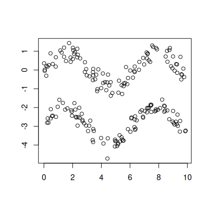

1 Introducción
La regresión modal intenta resolver la problemática que surge cuando existe más de una tendencia en la relación entre la variable respuesta ya la variable explicativa. El caso paradigmático el cual podemos pensar es el de los dos senos, representado en la Figura 1.1.

Figure 1.1: Dos senos perturbados con un error normal de varianza 0.3, con soporte entre 0 y 10 radiantes.
Como vemos, si se procediese con una regresión clásica, ya sea en media, cuantil o en mediana, la respuesta que obtendríamos sería un único valor, en el caso de la regresión en media incluso un valor donde no hay datos de ninguna de las dos tendencias. La regresión modal cambia el enfoque completamente, buscando como bien indica su nombre detectar las modas de la distribución de \(Y\) condicionada a un valor de \(X\). De esta forma, ahora no estaremos estimando un valor único sino un conjunto.
Bajo este nuevo prisma, una idea que se lleva a cabo es la estimación de la densidad de \(Y\) condicionada a \(X\) y la búsqueda de sus máximos en base a los valores de su derivada. En el caso paramétrico, realizaríamos una estimación por máxima verosimilitud de los parámetros que definen la densidad, plantearíamos las ecuaciones para la anulación de la derivada, y resolveríamos. En el caso no paramétrico, por otro lado, se pueden explorar otras técnicas, entre las que se encuentra el «mean-shift» parcial, del que hablaremos en este artículo, que explotan la estructura de la estimación tipo núcleo de la densidad para darnos un algoritmo bastante eficiente computacionalmente con el que estimar nuestro conjunto de modas objetivo.
En lo sucesivo, revisaremos en la primera sección la construcción del método que se empleará para la estimación del conjunto de modas condicionadas; comentaremos diversas medidas de error que pueden ser de utilidad y terminaremos con un repaso a los diversos selectores de ventana.
2 Marco teórico y estimador
Denotemos la variable respuesta unidimensional por \(Y\in\mathbb{R}\) y las variables explicativas por \(X\in D\subset\mathbb{R}^d\), donde \(D\), el soporte de \(X\), es un conjunto compacto. La regresión modal busca estimar las modas locales de la distribución de \(Y\) condicionada a \(X=x\), y a diferencia de la media o la mediana, el resultado puede ser un conjunto en lugar de un único valor. Este paradigma es capaz de detectar aspectos importantes de la distribución que pasan desapercibidos para otros tipos de regresión, como pueden ser la realizada en media o la regresión cuantil. Por ejemplo, cuando la distribución de \(Y\) condicionada a \(X=x\) es asimétrica o multimodal, las modas locales pueden resultar más descriptivas que la media o la mediana.
Denotaremos al conjunto de las modas locales de \(Y\) condicionada a \(X=x\) por \[ M(x)=\left\{y:\frac{\partial}{\partial y}f(y|x) = 0,\ \frac{\partial^2}{\partial y^2}f(y|x)<0\right\}, \] donde \(f(y|x)\) es la densidad de \(Y\) condicionada a \(X=x\), \[ f(y|x)=\frac{f(x,y)}{f(x)}, \] siendo \(f(x,y)\) y \(f(x)\) la densidad conjunta de \(X\) e \(Y\) y la densidad marginal de \(X\), respectivamente.
Fijado \(x\), \(f(x)\) es una constante, luego también podemos expresar \(M(x)\) como: \[ M(x)=\left\{y:\frac{\partial}{\partial y}f(x,y) = 0,\ \frac{\partial^2}{\partial y^2}f(x,y)<0\right\}. \]
Bajo ciertas condiciones, véase , las modas locales cambian de forma suave a medida que lo hace \(x\). Por tanto, las modas locales se comportan como una colección de superficies, denominadas variedades modales.
Veamos ahora la construcción del estimador
Supongamos que disponemos de una muestra \((X_1,Y_1),\dots,(X_n,Y_n)\). Tomando un estimador tipo núcleo de la densidad conjunta de \(X\) e \(Y\), \(\widehat{f}_n(x,y)\), llegamos al siguiente estimador no paramétrico del conjunto de modas locales de \(Y\) condicionada a \(X=x\), que denotamos por \(\widehat{M}_n(x)\): \[ \left\{y:\frac{\partial}{\partial y}\widehat{f}_n(x,y) = 0,\ \frac{\partial^2}{\partial y^2}\widehat{f}_n(x,y)<0\right\}. \]
Empezaremos construyendo dicho estimador de la densidad conjunta de \(X\) e \(Y\). Partimos de la expresión general del estimador tipo núcleo multidimensional, \(\widehat f(x,y)\): \[ \begin{align*} % &\widehat{f}(x,y)= \frac{\sum_{i=1}^nK_{d+1}\left(H^{-1/2}\left((x,y)-\left(X_i,Y_i\right)\right)\right)}{n|H|^{1/2}}, \end{align*} \] donde \(K_{d+1}\) es el kernel y \(H\) la matriz de ventanas. Tomando \(H\) de la forma \[ H=\left(\begin{array}{c|c} h_1^2\cdot I_d & 0 \\ \hline 0 & h_2^2 \end{array}\right), \] tendríamos que \[ \begin{gather*} |H|^{1/2}=\left(h_1^{2\cdot d}\cdot h_2^{2}\right)^{1/2}=h_1^dh_2,\\ H^{-\frac{1}{2}}\left((x,y)-\left(X_i,Y_i\right)\right)=\left(\frac{x-X_i}{h_1},\frac{y-Y_i}{h_2}\right). \end{gather*} \]
Usando un kernel gaussiano1 multidimensional, podemos separar la variable \(X\) de la \(Y\) de la siguiente forma: \[ \begin{align*} K_{d+1}(x,y)= (2\pi)^{-(d-1)/2}K(\|x\|)K\left(y\right). \end{align*} \]
Así, el estimador de la densidad conjunta, \(\widehat f(x,y)\), quedaría \[ \frac{(2\pi)^{-(d-1)/2}}{nh_1^dh_2}\sum_{i=1}^nK\left(\frac{\|x-X_i\|}{h_1}\right)K\left(\frac{y-Y_i}{h_2}\right). \]
Ahora bien, se verifica que \[ K^\prime(x)=(2\pi)^{-1/2}e^{-x^2/2}(-x)=-xK(x). \]
De esta manera, podemos escribir la derivada parcial \(\partial \widehat f(x,y)/\partial y\) de la siguiente manera: \[\begin{equation} \sum_{i=1}^nK\bigg(\frac{\|x-X_i\|}{h_1}\bigg)K\bigg(\frac{y-Y_i}{h_2}\bigg)\frac{Y_i-y}{h_1^{d}h_2^3} \tag{2.1} \end{equation}\] –obviando la constante \(n^{-1}(2\pi)^{-(d-1)/2}\)–.
Si ahora denotamos por \(m(x,y) - y\) a la siguiente expresión, \[ \underset{m(x,y)}{\underbrace{\frac{\sum_{i=1}^nK\left(\frac{\|x-X_i\|}{h_1}\right)K\left(\frac{y-Y_i}{h_2}\right)Y_i}{\sum_{i=1}^nK\left(\frac{\|x-X_i\|}{h_1}\right)K\left(\frac{y-Y_i}{h_2}\right)}}} - y \] podemos expresar (2.1) como \[ \frac{m(x,y) - y}{h_2^3h_1^d}\sum_{i=1}^nK\bigg(\frac{\|x-X_i\|}{h_1}\bigg)K\bigg(\frac{y-Y_i}{h_2}\bigg) \] y, recuperando la constante: \[ \frac{\partial}{\partial y} \widehat f(x,y) = \frac{\widehat f(x,y)}{h_2^2}\Big[m(x,y) - y\Big]. \]
El factor \(m(x,y)-y\) se conoce como «mean shift» parcial (por venir de una derivada parcial y no del gradiente completo). Se tiene que, si \(y_m\) es una moda local de \(Y\) condicionada a \(X=x\), entonces \(\partial\widehat{f}(x,y_m)/\partial y=0\), luego \(m(x,y_m) = y_m\). Además, probó que las modas locales son las únicas soluciones estables de la ecuación \(m(x,y)=y\). Este resultado motiva el uso del siguiente algoritmo, comentado en Chen et al. (2016), para encontrar las modas locales de \(Y\) condicionada a \(X=x\):
Dada una muestra \((X_1,Y_1),\dots,(X_n,Y_n)\) y un punto \(x\), definimos unos puntos iniciales
para cada \(j\in J\), actualizamos el valor de \(y_{j}^k\) haciendo \(y_{j}^{k+1} = m(x,y_{j}^k).\)
iteramos por separado en cada \(j\) hasta converger a unos \(y_{j}^\infty\). La estimación del conjunto de modas locales de \(Y\) condicionada a \(X=x\) será \(\widehat M_n(x) = \{y_{j}^\infty\,\colon j\in J \}\).
Básicamente, lo que se hace en cada iteración es mover la componente \(y\) del punto a la media de las componentes \(y\) de los puntos de la muestra ponderados en función de la cercanía, de ahí el nombre del procedimiento. Se trata de un algoritmo de ascenso en la dirección del gradiente (dirección dada por el «mean shift» parcial) en el que la longitud del paso es \(h_2^2/\widehat f(x,y^k)\) (se ajusta automáticamente en cada iteración). El paso es más largo en zonas de baja densidad y se va reduciendo a medida que el iterante se acerca a una moda.
Aunque durante el desarrollo hemos utilizado un kernel gaussiano, no es la única opción. La condición que debe satisfacerse es que el kernel utilizado en la variable \(Y\) sea radialmente simétrico y, en concreto, de la forma: \[K(y)=c_k\cdot k(y^2),\] donde \(k\) se denomina perfil del kernel \(K\) y \(c_k\) es una constante de integración. Si denotamos \[g(y)=-k^\prime(y) \text{ y } G(y)=c_g\cdot g(y^2),\] en el algoritmo del «mean shift» parcial aparecería el kernel \(G\) actuando sobre la variable \(Y\) en la expresión de \(m\). Se dice que el kernel \(K\) es la sombra del kernel \(G\). En el caso del kernel gaussiano, \(K=G\). El kernel de Epanechnikov, que también satisface la condición, es la sombra del kernel uniforme. Véase Cheng (1995).
3 Medidas de error
Antes de comentar algunas de las medidas de error consideradas en la literatura, introducimos la distancia Hausdorff, en la que se basan. Se trata de una distancia entre conjuntos definida como \[ Haus(A, B) = \inf \{r:A\subseteq B\oplus r, B \subseteq A\oplus r\}, \] donde \(A\oplus r=\{x:d(x,A)\leq r\}\) y \(d(x,A)=\inf_{y\in A} \|x- y\|\). Intuitivamente, coincide con la máxima distancia entre un punto de un conjunto y el punto más cercano del otro conjunto.
Consideraremos como medida de error puntual en \(x\in\mathbb{R}^d\) la distancia Hausdorff entre \(M(x)\), el conjunto teórico de modas locales de \(Y\) condicionada a \(X=x\), y \(\widehat{M}_n(x)\), la estimación del mismo: \[ \Delta_n(x)=Haus\left(\widehat{M}_n(x), M(x)\right). \] Y, como medida de error sobre todas las \(x\) simultáneamente, definimos \[ \Delta_n = \sup_{x\in D} Haus\Big(\widehat M_n(x), M_n(x)\Big). \]
3.1 Conjuntos de confianza
Presentaremos dos tipos de conjuntos de confianza: puntuales y uniformes, véase Chen et al. (2016).
Empezaremos por los conjuntos de confianza puntuales. Fijados \(x\in D\) y \(\alpha\in(0,1)\), queremos encontrar un conjunto \(\widehat{C}_n^0(x)\) tal que \[ \mathbb{P}\left(M(x)\in\widehat{C}_n^0(x)\right)=1-\alpha. \] Este conjunto se podría expresar como \[ \widehat{C}_n^0(x)=\widehat{M}_n(x)\oplus \delta_{n,1-\alpha}(x), \] donde \(\delta_{n,1-\alpha}(x)\) es el cuantil \(1-\alpha\) de la variable \(\Delta_n(x)\).
bootstrap (lo más sencillo sería un naïve bootstrap). Los pasos a seguir serían los siguientes:
Partiendo de la muestra \[ \widehat{\Delta}_n^\ast(x)=Haus\left(\widehat{M}_n^\ast(x),\widehat{M}_n(x)\right). \]
Repitiendo los dos primeros pasos \(B\) veces, obtenemos \(\widehat{\Delta}_{1,n}^\ast(x),\dots,\widehat{\Delta}_{B,n}^\ast(x)\), y podemos usar el cuantil muestral \(1-\alpha\) de este conjunto, \(\widehat{\delta}_{n,1-\alpha}(x)\), como estimador de \(\delta_{n,1-\alpha}(x).\)
Así, la estimación del conjunto de confianza para \(M(x)\) a nivel \(1-\alpha\) sería \[ \widehat{C}_n(x)=\widehat{M}_n(x)\oplus \widehat{\delta}_{n,1-\alpha}(x). \]
También podemos construir conjuntos de confianza uniformes. De forma análoga a los conjuntos de confianza puntuales, denotamos por \(\delta_{n,1-\alpha}\) al cuantil \(1-\alpha\) de \(\Delta_n\) y tenemos que \[ \mathbb{P}\left(M(x)\subseteq \widehat{M}_n(x)\oplus \delta_{n,1-\alpha},\forall x\in D\right)=1-\alpha. \] De nuevo, la distribución de \(\Delta_n\) es desconocida y debemos recurrir a técnicas de remuestreo para aproximarla. Repitiendo el procedimiento descrito para los conjuntos puntuales, podemos calcular, para cada muestra bootstrap, \[ \Delta_n^\ast= \sup_{x\in D}\widehat{\Delta}_n^\ast(x) \] y estimar \(\delta_{n,1-\alpha}\) por \(\widehat{\delta}_{n,1-\alpha}\), el cuantil \(1-\alpha\) muestral de \(\Delta_{1,n}^\ast,\dots,\Delta_{B,n}^\ast\). Así, llegamos a la siguiente estimación del conjunto de confianza uniforme a nivel \(1-\alpha\): \[ \widehat{C}_n=\left\{(x,y):x\in D, y\in \widehat{M}_n(x)\oplus \widehat{\delta}_{n,1-\alpha}\right\}. \]
3.2 Conjuntos de predicción
A parte de los conjuntos de confianza para las modas locales de \(Y\) condicionada a \(X=x\), también podemos usar la regresión modal para construir conjuntos de predicción para la propia \(Y\), % condicionada a \(X=x\) véase Chen et al. (2016). En concreto, nos centraremos en encontrar conjuntos de predicción uniformes.
Dado un nivel \(1-\alpha\), queremos definir un conjunto \(\mathcal{P}_{1-\alpha}\) tal que \[ \mathbb{P}\left(Y\in\mathcal{P}_{1-\alpha}\right)\geq 1-\alpha. \] Este conjunto será de la forma \[ \mathcal{P}_{1-\alpha}=\left\{(x,y):x\in D, y\in M(x)\oplus \varepsilon_{1-\alpha}\right\}, \] donde \(\varepsilon_{1-\alpha}\) es el cuantil \(1-\alpha\) de la variable aleatoria \(d\left(Y,M(x)\right).\)
En la práctica, podemos aproximar \(\varepsilon_{1-\alpha}\) por el cuantil \(1-\alpha\) de \(d\Big(Y_1,\widehat{M}_n(X_1)\Big),\dots,d\Big(Y_n,\widehat{M}_n(X_n)\Big)\), al que denotaremos por \(\widehat{\varepsilon}_{1-\alpha}.\) De esta manera, la estimación del conjunto de predicción uniforme a nivel \(1-\alpha\) es \[ \widehat{\mathcal{P}}_{1-\alpha}=\left\{(x,y):x\in D, y\in \widehat{M}_n(x)\oplus \widehat{\varepsilon}_{1-\alpha}\right\}. \]
3.3 Selección de ventanas
La estimación \(\widehat{M}_n(x)\) depende en gran medida de la elección de las ventanas, \(\mathbf{h}=(h_1,h_2)\). Einbeck and Tutz (2006) proponen usar las mismas ventanas que se recomiendan en la estimación tipo núcleo de la densidad de \(Y\) condicionada a \(X=x\), lo que en primera instancia parece razonable. Sin embargo, según Zhou and Huang (2019), este criterio no es adecuado, pues a la hora de estimar modas locales no nos interesan otros aspectos de la densidad como pueden ser las colas o las alturas de las propias modas. A continuación, comentamos algunos criterios vistos en la literatura, aunque merece la pena destacar que este sigue siendo un tema de investigación abierto.
Chen et al. (2016) plantean un criterio que consiste en buscar el valor de \(\mathbf{h}\) para el cual se minimiza el volumen del conjunto de predicción uniforme asociado: \[ Vol\left(\widehat{\mathcal{P}}_{1-\alpha,\mathbf{h}}\right)=\widehat{\varepsilon}_{1-\alpha,\mathbf{h}}\int_{x\in D}\widehat{N}_{\mathbf{h}}(x)\, dx, \] donde \(\widehat{N}_{\mathbf{h}}(x)\) es el número de modas locales estimadas en \(X=x\). Para evitar un sobreajuste, puede calcularse \(\widehat{\varepsilon}_{1-\alpha,\mathbf{h}}\) por validación cruzada.
Zhou and Huang (2019) cuestionan este método por la presencia de un hiperparámetro de afinado, \(\alpha\), cuya elección puede influir en el resultado, y sugieren encontrar el \(\mathbf{h}\) que minimice la expresión:
\[ \frac{1}{n}\sum_{i=1}^n d^2\left(\widehat{M}_{n,\mathbf{h},-i}\left(X_i\right),Y_i\right)\widehat{N}_{\mathbf{h},-i}^2\left(X_i\right)w\left(X_i\right), \] donde el subíndice \(-i\) denota que la estimación se lleva a cabo usando toda la muestra menos el punto \(\left(X_i,Y_i\right)\) y \(w\) es una función de pesos, con la que se puede restar importancia a zonas en las que haya pocas observaciones.